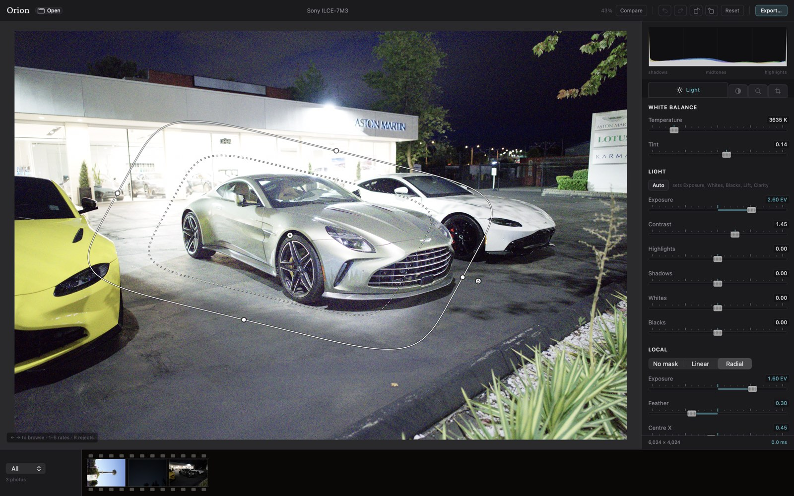

Raw development · macOS 14 and later
A raw editor that
shows its working.
Orion develops a 24-megapixel Sony raw file at full resolution while you drag the slider — not a downsampled proxy that sharpens up after you let go. Every non-trivial filter in it names the published paper it came from, and the ones that don't yet are on a list you are welcome to read.
Not released yet. Four milestones of five are done or in flight; this page tracks what is actually built, and says where it stops.
The register
Every filter names its paper.
The ones that don't are listed too.
Most editors ask you to trust the numbers inside them. Orion's rule is that a technically non-trivial filter cites a published, dated reference, kept in the repository beside the code. The rule exists because it failed once: a set of plausible-looking constants put a purple cast on every photograph, and nothing in the code looked wrong. What could not be checked was where the numbers had come from.
| What you touch | Where the maths comes from | Status |
|---|---|---|
| Clarity | Paris, Hasinoff & Kautz, SIGGRAPH 2011 · Aubry et al., ACM TOG 33(5), 2014 | Sourced |
| Dehaze | He, Sun & Tang, CVPR 2009 · IEEE TPAMI 33(12), 2011 | Sourced |
| Shadow lift | Hessel & Morel, IPOL 9, 2019 / WACV 2020 · Mertens et al., 2007 | Sourced |
| Highlights & shadows | He, Sun & Tang, Guided Image Filtering, ECCV 2010 · TPAMI 35(6), 2013 | Sourced |
| Demosaic | Luis Sanz Rodríguez, RCD — MIT-licensed, and darktable's chosen default | Sourced |
| White balance | Adobe's DNG SDK dng_temperature, over Robertson's 31-row table |
Sourced |
| Tone mapping | Troy Sobotka's AgX, the default view transform in Blender 4.0 | Sourced |
| Creative LUTs | Adobe, Cube LUT Specification 1.0, 2013 · Sakamoto & Itooka, US 4,275,413, 1981 | Sourced |
| Tone curve | Fritsch & Carlson, SIAM J. Numer. Anal. 17(2), 1980 | Sourced |
| Colour grading wheels | Van Hurkman, Color Correction Handbook, 2nd ed., 2014 | Sourced |
| Gradient mask falloff | Perlin, Improving Noise, ACM TOG 21(3), 2002 — smootherstep, not smoothstep | Sourced |
| Lens corrections | lensfun's measured database, vendored unmodified under CC BY-SA 3.0 | Sourced |
| Highlights & shadows | Where the four tonal bands sit — −5.5, −2.5, +2.5, +5.5 EV from middle grey. The shape is published; the centres are Orion's own. | In register |
| Vibrance | Backs off in proportion to how saturated a colour already is. The idea is universal; this exact curve is nobody's published one. | In register |
| Colour mixer | Eight hue bands and their falloff. Reasoned — overlapping so a gradient across two of them cannot band — but not cited. | In register |
| Camera profile | The stages are Adobe's published ones. The hue-twist numbers are fitted from one camera body, not read from a maker's profile. | In register |
| Auto levels | The paper recommends no clipping percentage at all. The widely repeated "0.5% per side" is a reading of a figure caption, and it is used as inference. | In register |
| Dehaze | The atmospheric light's percentile is taken over pooled 4×4 block maxima, not over pixels as published. | In register |
Twelve entries are open, ordered by how much the gap actually costs the photograph.
They live in research/UNSOURCED.md, and the list is meant to shrink.
The number
9.29 ms — and exactly
what that is a measurement of.
It is the 95th-percentile time to redraw after the exposure slider moves, on a 24-megapixel Sony ARW, at the file's full 6,024 × 4,024 — not at a preview size that gets refined once your hand comes off the mouse. Three of the pipeline's 114 nodes recompute, because an exposure change dirties nothing above itself in the graph.
That figure has not moved while clarity, dehaze, shadow lift, creative LUTs and masks were added on top of it. Each of them collapses to nothing when its slider sits at zero, so the photographer who never touches dehaze never pays for it.
| What you're dragging | Nodes | Per frame | Runs at |
|---|---|---|---|
| Exposure, contrast, tone | 3 | 9.29 ms | full |
| A gradient mask | 4 | ~12 ms | full |
| Creative LUT | — | 7 ms | fused into display |
| Shadow lift | 32 | 37–48 ms | quarter |
| Clarity | 32 | 58 ms | full |
| Dehaze | 16 | 108 ms | full |
The two slow ones are slow, and it says so
Clarity and dehaze are correct, not yet interactive. Dehaze is 108 ms and the profiler names the reason: six full-resolution 15-tap rank passes, each within 2% of the others. There is nothing to fix one of. The published faster algorithm is a sequential scan, which is what a GPU is worst at — so it is written down as a candidate rather than attempted and quietly abandoned.
A green test suite is not evidence
The mask code was checked by breaking it on purpose, eight ways. Seven died at once. The eighth — pinning the canvas map's origin so the overlay ignores panning entirely — passed all 3,100 checks, because the test had proved the map was invertible rather than that it was the right map. The check was rewritten until all eight die.
Measured on photographs, not on gradients
Synthetic test images hide the failures that matter. Auto-enhance is judged by whether a real frame's median luminance lands where it was aimed: 0.617 → 0.473 on a daylight frame, 0.129 → 0.461 on a night one. Not by whether the picture "moved".
Local edits · in progress
Put the gradient where
you want it, with your hands.
Linear and radial gradients, dragged on the picture rather than dialled in on a slider. A mask is stored as its parameters — a centre, an angle, two radii — so it survives a window resize, and an export matches the preview it was made on. It also stays on its subject when you crop, turn or straighten the frame, because the placement is carried through the same transform the geometry shader uses rather than a second guess at it.


The check that matters, on a real frame
A linear mask at −1.6 EV, measured either side of the gradient. Where coverage is zero the pixel has to be left exactly alone — otherwise a mask lays a faint edit across the whole photograph and still looks right.
| Region | Mask off | Mask on |
|---|---|---|
| Zero side | 0.4703 | 0.4703 |
| Full side | 0.4110 | 0.1981 |
Bit-identical on the zero side. That is the invariant; the visible change is the easy half.
Not built yet: mask groups and compositing, guided-filter edge refinement, luminance and colour range masks, and subject or sky selection. Brush masks have their kernel and its tests, and nothing you can yet reach. None of that is on this page pretending to exist.
Where it actually is
What works today,
and what doesn't.
Built
- Folder browsing — no catalogue to import into
- Ratings, reject flags and colour labels, written to XMP sidecars
- Sony ARW, plus Bayer cameras and DNG through LibRaw
- Exposure, contrast, highlights, shadows, whites, blacks — all in scene-linear light
- White balance, temperature and tint
- Tone curve, per channel
- Colour mixer across eight hue bands
- Colour grading wheels and split toning
- Clarity, dehaze, shadow lift, creative
.cubeLUTs - One-click auto-enhance that moves ordinary sliders you can then argue with
- Sharpening and profiled denoise
- Crop, rotate, straighten
- Lens distortion, vignetting and chromatic aberration from measured profiles
- Linear and radial gradient masks, dragged on the canvas
- Export to JPEG, TIFF and PNG, with location data stripped by default
- Undo, redo and a history panel
Not yet
- Brush masks — the kernel is in; painting on the canvas is not
- Mask groups — add, subtract, intersect
- Luminance and colour range masks
- Subject and sky selection
- Spot and blemish removal
- Perspective and keystone correction
- Presets, copy-paste settings, batch export
- Film grain, snapshots, output sharpening
- Fujifilm X-Trans files — refused by name today rather than rendered as a scramble
Cut from v1
- Cloud sync and a mobile app
- A full asset manager
- Layers and Photoshop-grade retouching
The other thing
No subscription.
Lightroom is rented. Orion is meant to be a one-time purchase or free — that decision is written down, the price is not, and nothing on this page will pretend otherwise until it is. It is built by one developer, for their own camera and for the students and hobbyists Adobe's monthly bill has priced out.